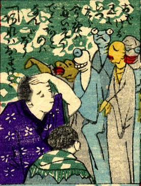

化物；バケモノ

4体の化物を親子が見ている。化物は一つ目や首が長い者、肌が黄色い者などである。詞書に「お化けを見に行ったら、今夜はたいそう出た後のはなんだろう。あれはおまけさ」とある。
著作者：芳幾近二／出典：親書誌：U426_nichibunken_0229：新作おばけ野噺；シンサクオバケノバナシ／日付：2010／資源識別子：U426_nichibunken_0229_0008_0000
Copyright (c)2010- International Research Center for Japanese Studies, Kyoto, Japan. All rights reserved.